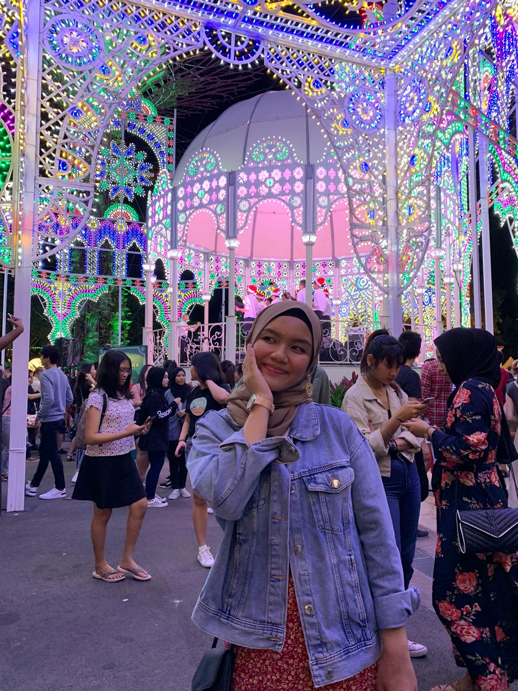
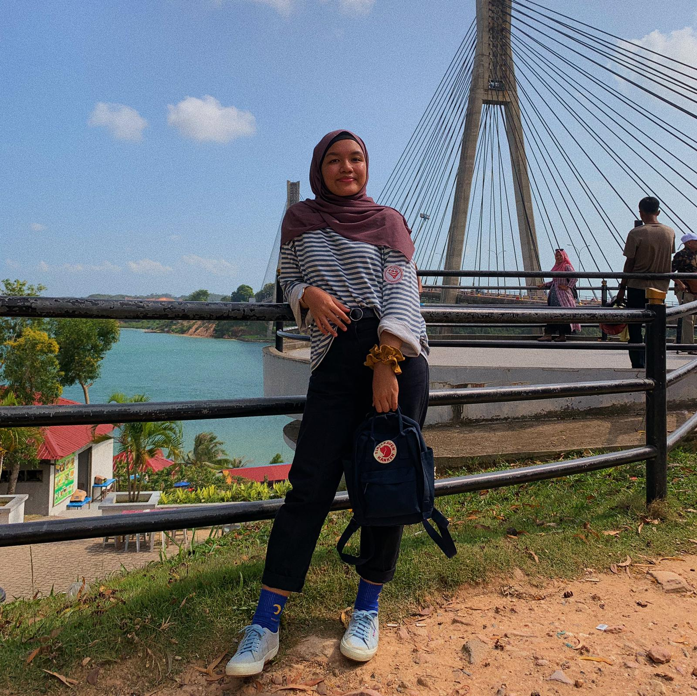
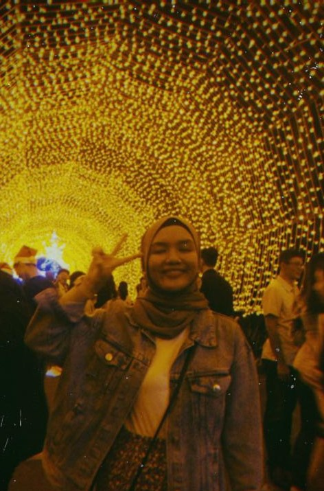
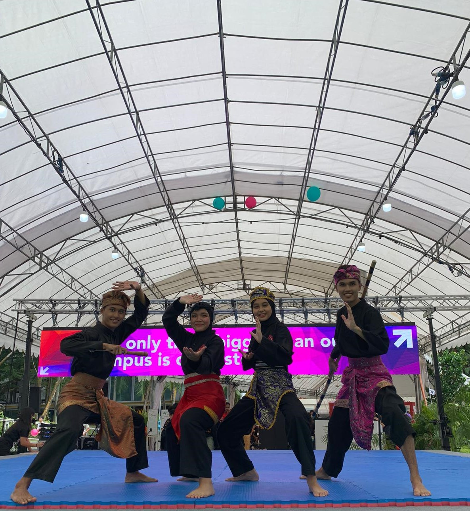
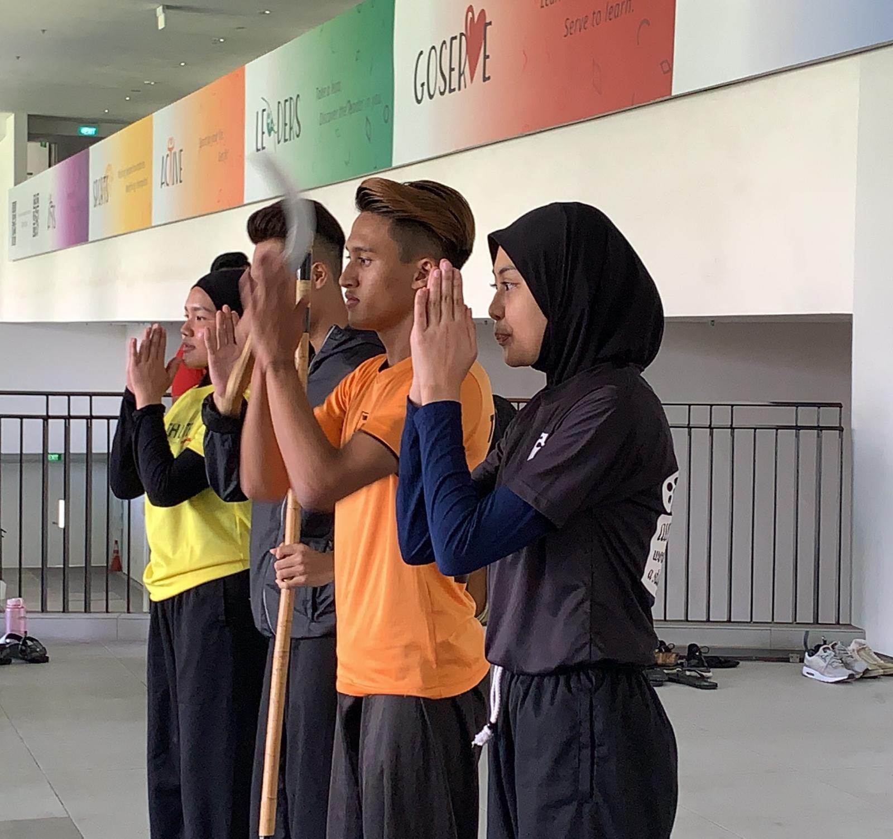
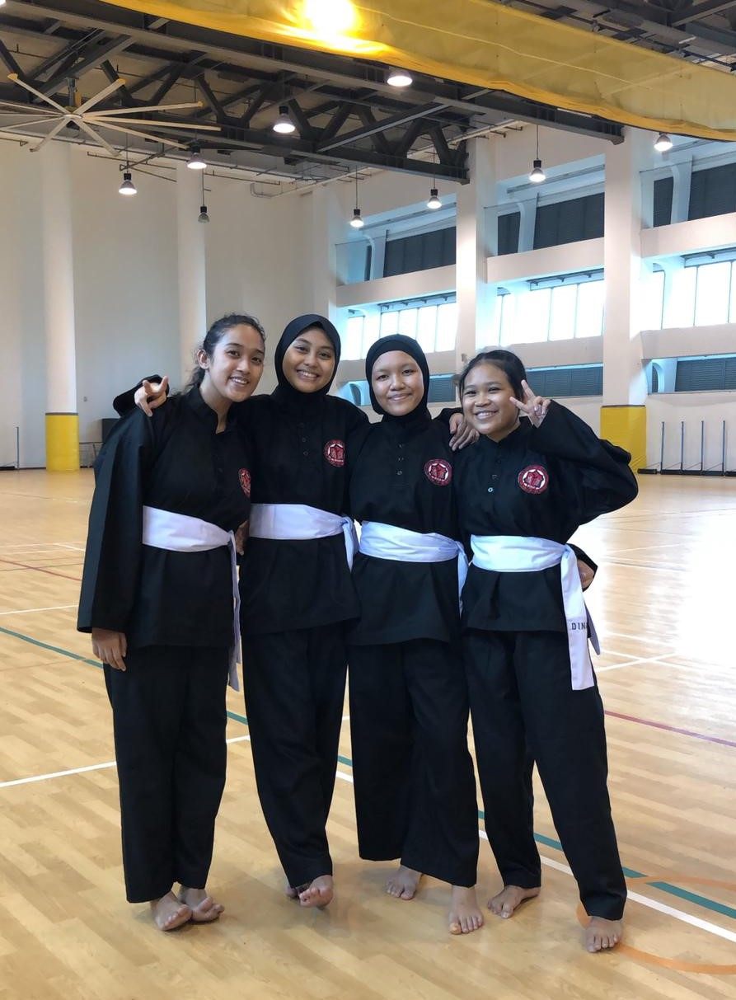
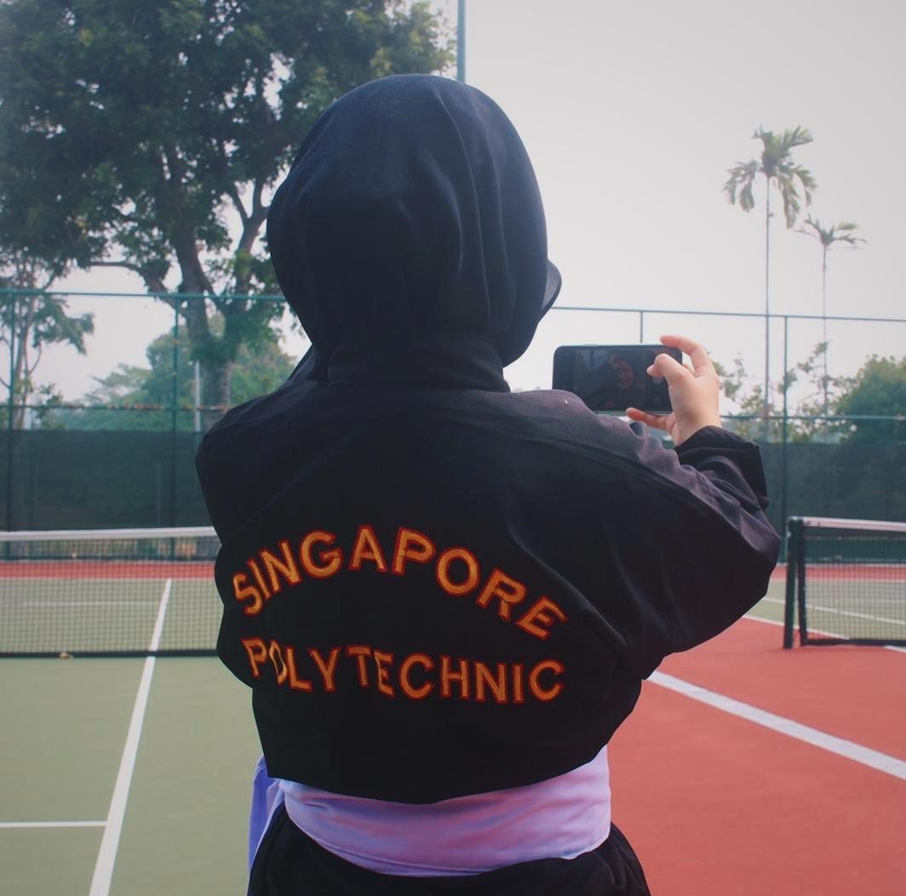
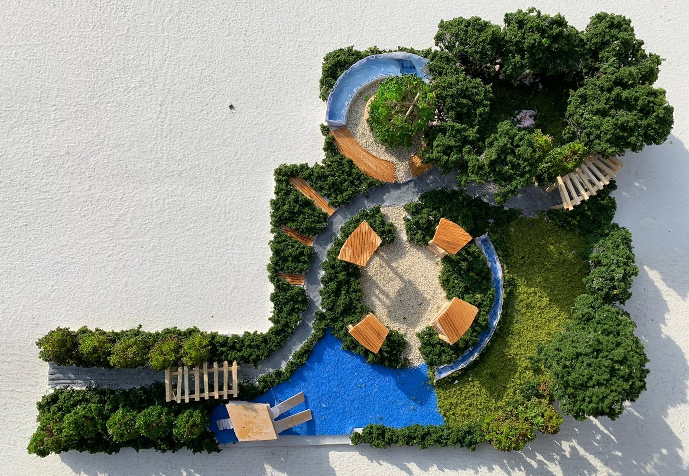
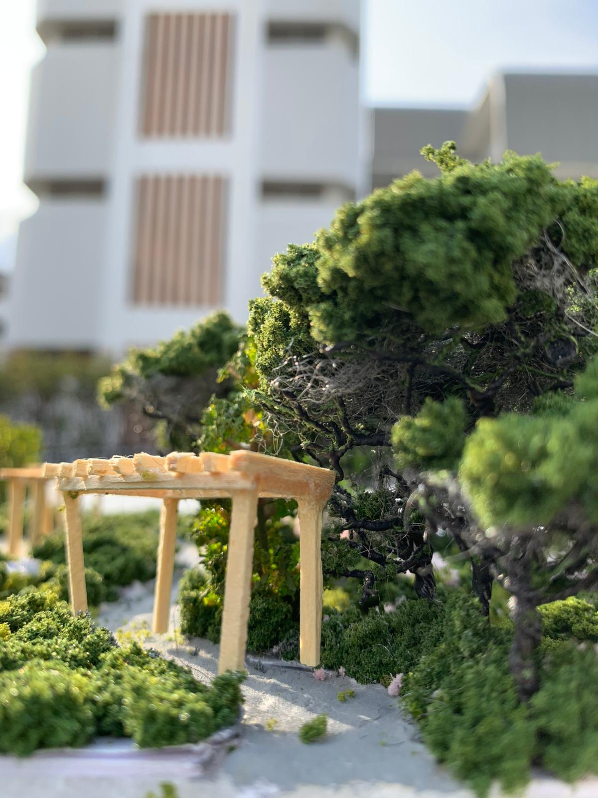
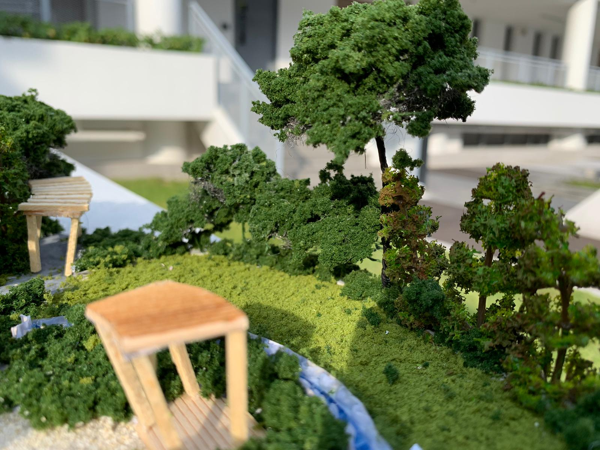

About
Hello, my name is Nur Diyana Aqilah and i am a student from Singapore Polytechic studying Landscape Architecture.
Here in this page, i will be sharing about my hobbies, my interest and about the course of study i am pursuing.
In addition, I also look forward to learn more new interesting things in this elective course.
  My hobbies and interest:
I enjoy doing sports as one of my hobby. During my free days, i would prefer to go out to be active instead of just sitting at home. Some examples of different types of sports i did was: hiking, ice skating and inline skating.
I took up many different sports since young. I joined a swimming club when i was in primary school and continued to take up netball as a sports cca in my secondary school.
I enjoyed both of those sports but i wanted to venture out to try different sports, so in Singapore polytechnic, i decided to join Singapore Polytechnic's silat club as my cca as i didnt get a chance to try martial arts in my life.
   Diploma in Landscape Architecture
Apart from my hobbies and interest, i also enjoy drawing and doing some art during my free time. Through out my years of drawing different type of things, varying from portrait, fast sketch and doodling, i realise that i enjoy painting landscapes. I enjoy how nature and buildings come together to create a beautiful landscape.
With that, i found out that Singapore Polytechnic offers a course which is of my interest. Therefore, i did whatever it takes to enter this course and i got it! :D
The pictures shown below is my model for my final project that i did during for my final year project in year 1.
  